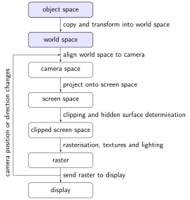
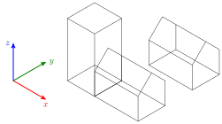
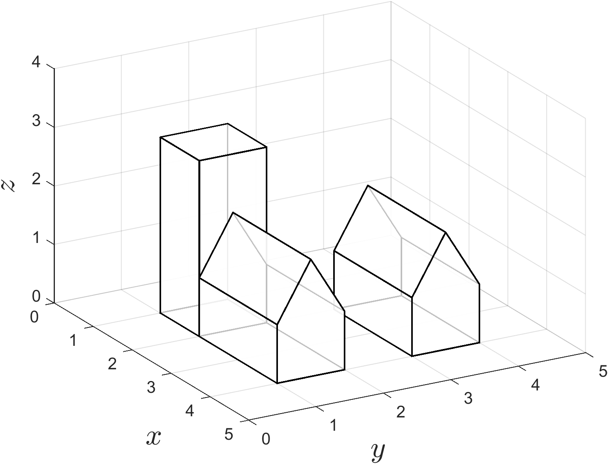

World space
Contents
World space#

Once the objects have been define they can be used to build the virtual environment. The objects are copied to the world space and transformed using scaling, rotation and translation operations to construct the virtual world.
{kind=link}

Fig. 52 The world space#
The transformations applied to the objects is done in the order scaling followed by rotation followed by translation so that the shape of the object is preserved. Therefore the world space vertices of each object vertices are calculated using
The object vertex co-ordinates are then appended to a vertex matrix containing all of the objects in the virtual environment, i.e.,
So \(V_{\text{world}}\) is a \(4 \times N_{verts}\) matrix where \(N_{verts}\) is the total number of vertices that define the virtual environment. The face array for each object is also appended to the bottom of a face matrix containing all faces for the objects that make up the virtual environment, i.e.,
So \(F_{\text{world}}\) is an \(N_{faces} \times N_{sides}\) matrix where \(N_{faces}\) is the total number of faces in the virtual environment and \(N_{sides}\) is the maximum number of sides of the faces. Since \(F_{\text{world}}\) links to \(V_{\text{world}}\) then when adding a new face to \(F_{\text{world}}\) we need to add the number of columns currently in \(V_{\text{world}}\) to \(F_{\text{object}}\).
Example 30
The virtual world shown in The world space is constructed using 2 house objects from Example 29 and a cube object. The house objects are rotated by angle \(\theta = \pi/2\) about the \(z\) axis and translated so that the centre of the bases have position vectors \(\mathbf{c}_1 = (3, 3.5, 0)\) and \(\mathbf{c}_2 = (3, 1.5, 0)\). The cube object has side lengths 2 is scaled by a factor of \(0.5\) in the \(x\) and \(y\) directions and \(1.5\) in the \(z\) direction so that it resembles a tower and translated so that the centre of the base is at \(\mathbf{c}_3 = (1.5, 1.5, 0)\). Determine the vertex and face matrices for the world space.
Solution
Since \(\cos(\pi/2) = 0\) and \(\sin(\pi/2) = 1\) then the rotation and translation matrices for the first house object are
so the composite transformation matrix is
Applying the composite transformation to \(V_{\text{house}}\) from Example 29 gives
and since this is the first object added to the world space then \(F_{\text{world}} = F_{\text{house}}\). Doing similar for the second house object gives the following composite transformation matrix
which applied to the object co-ordinates for the house object gives
These are appended to the end of the world space vertex matrix
Since the the number of vertices was \(N_{verts} = 10\) prior to appending the second house object then we need to add 10 to \(F_{\text{house}}\) and append it to \(F_{\text{world}}\)
The scaling and translation matrices for the cube (tower) object are
which gives the transformed vertex matrix
Appending these to \(V_{\text{world}}\) gives
There were \(N_{verts}=20\) vertices in the world space prior to appending the cube object so we need to add 20 to \(F_{\text{cube}}\) and append it to \(F_{\text{world}}\)
After the 3 objects have been added to the world space the virtual world is described by 20 polygons defined by 28 vertices.
MATLAB code#
The MATLAB code in below builds the virtual world from Example 30 and plots the world space.
% Define house object
Vhouse = [ -0.5, 0.5, 0.5, -0.5, -0.5, 0.5, 0.5, -0.5, 0, 0 ;
-1, -1, 1, 1, -1, -1, 1, 1, -1, 1 ;
0, 0, 0, 0, 1, 1, 1, 1, 2, 2 ;
1, 1, 1, 1, 1, 1, 1, 1, 1, 1 ];
Fhouse = [ 4, 3, 2, 1, 1 ;
1, 2, 6, 9, 5 ;
2, 3, 7, 6, 6 ;
3, 4, 8, 10, 7 ;
1, 5, 8, 4, 4 ;
6, 7, 10, 9, 9 ;
5, 9, 10, 8, 8 ];
% Define cube object
Vcube = [ -1, 1, 1, -1, -1, 1, 1, -1 ;
-1, -1, 1, 1, -1, -1, 1, 1 ;
-1, -1, -1, -1, 1, 1, 1, 1 ;
1, 1, 1, 1, 1, 1, 1, 1 ];
Fcube = [ 1, 4, 3, 2, 2 ;
1, 2, 6, 5, 5 ;
2, 3, 7, 6, 6 ;
3, 4, 8, 7, 7 ;
4, 1, 5, 8, 8 ;
5, 6, 7, 8, 8 ];
% Define transformation parmeters
theta = pi / 2;
c1 = [3, 3.5, 0];
c2 = [3, 1.5, 0];
c3 = [1.5, 1.5, 1.5];
s = [0.5, 0.5, 1.5];
% Define transformation functions
T = @(t) [ 1, 0, 0, t(1) ;
0, 1, 0, t(2) ;
0, 0, 1, t(3) ;
0, 0, 0, 1 ];
S = @(s) [ s(1), 0, 0, 0 ;
0, s(2), 0, 0 ;
0, 0, s(3), 0 ;
0, 0, 0, 1 ];
Rz = @(theta) [ cos(theta), sin(theta), 0, 0 ;
-sin(theta), cos(theta), 0, 0 ;
0, 0, 1, 0 ;
0, 0, 0, 1 ];
% Add first house object
Vobj = T(c1) * Rz(theta) * Vhouse;
Fobj = Fhouse;
Vworld = Vobj;
F = Fobj;
% Add second house object
Vobj = T(c2) * Rz(theta) * Vhouse;
Fobj = Fhouse + size(Vworld, 2); % add number of vertices in world space to face array
Vworld = [Vworld, Vobj];
F = [F ; Fobj];
% Add tower object
Vobj = T(c3) * S(s) * Vcube;
Fobj = Fcube + size(Vworld, 2); % add number of vertices in world space to face array
Vworld = [Vworld, Vobj];
F = [F ; Fobj];
% Plot world space
patch('Vertices', Vworld(1:3,:)', 'Faces', F, FaceColor='w', FaceAlpha=0.75, LineWidth=2)
xlabel('$x$', 'Interpreter', 'latex', 'FontSize', 18)
ylabel('$y$', 'Interpreter', 'latex', 'FontSize', 18)
zlabel('$z$', 'Interpreter', 'latex', 'FontSize', 18)
view(45, 30)
axis([0, 5, 0, 5, 0, 4])
grid on
{kind=link}

Fig. 53 The world space from Example 30.#